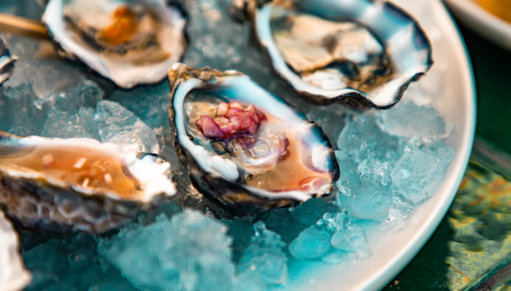

Menu
Our menu
Welcome to a journey through the flavours of the sea, where every dish tells a story of freshness, tradition and creativity.
Raw bar
- Gillardeau oysters (14)€ 8 each
- Gold oysters (14)€ 9 each
- Purple shrimp (2)€ 10 each
- Langoustine (2)€ 10 each
- Sicilian langoustine carpaccio (2/6/9)€ 27Sicilian langoustine carpaccio, clementine mostarda, roasted fennel and toasted pistachio.
- Amberjack sashimi (4/5/12/22)€ 26Amberjack sashimi, fermented radish, goat cheese and Moroccan lemon.
- Purple shrimp tartare (2/13)€ 28Purple shrimp tartare, green apple, lime and gin.
- Wagyu tartare (6/12/22)€ 30Wagyu tartare with fermented gherkin, shallot and toasted almonds.
Starters
- Squid and white roots (1/14)€ 24Warm squid with celeriac and Jerusalem artichoke purée, mint, chives and black lemon.
- Octopus and lardo (6/12/17/22)€ 28Grilled octopus in a lardo crust, with leek and hazelnut cream.
- Fermented beetroot (5/6/13/22)€ 18Fermented beetroot with goat cheese, hazelnuts, balsamic reduction and roasted fennel.
- Mixed fried seafood (1/2/4/17/19)€ 27Shrimp, squid, octopus and small red mullet, lightly fried.
- Cantabrian anchovies (1/4/5/19)€ 28Cantabrian anchovies with bread and clarified butter.
- Violet rudderfish, dill and cucumber (4)€ 25Violet rudderfish in a dill crust, with pickled cucumber, passion fruit vinegar and lemon.
First courses
- Fish soup (2/4/12/14/22)€ 32Mixed fish soup.
- Risotto with friarielli cream and mussels (1/5/14/17/22)€ 30
- Paccheri with lobster (1/2/3/7/12)€ 38
- Potato and chestnut ravioli (1/3/5/13/14/24)€ 28Chestnut ravioli filled with potato and rosemary, with wild mushrooms.
- Filled cappellacci (1/3/5/12/13/14/15/16/19/22)€ 26Cappellacci filled with chicken cacciatora.
- Ricotta ravioli with langoustine cream (1/2/3/5/12/13/14/16/22)€ 32Ravioli filled with ricotta, thyme and lemon in a langoustine cream.
Main courses
- Mackerel with peas and red cabbage (4/12)€ 27Mackerel with fermented red cabbage, mint, green apple and celeriac cream.
- Salt-crusted sea bass (1/3/4)€ 34Sea bass in a salt and herb crust, with a seasonal salad.
- Tuna Milanese (1/3/4/5/19)€ 30Tuna steak in panko breadcrumbs, with lemon mayonnaise.
- Monkfish in a garlic crust (4/6/22)€ 32Monkfish with pumpkin purée, Swiss chard and toasted almonds.
- Mixed grill of fish and shellfish (2/4/12)€ 52Octopus, squid, shrimp, langoustines, king prawns and white fish from the grill.
- Wagyu tagliata with wild rocket and tomatoes (7/12)€ 60
Desserts and spirits
- Tiramisù€ 10The great Italian classic: delicate mascarpone cream and the intensity of coffee and cocoa.
Suggested pairings
- Ben Ryé – Donnafugata€ 14A rich passito with notes of ripe fruit and honey that lifts the creaminess of the dessert.
- Diplomático Selección de Familia€ 15An elegant, spiced rum whose vanilla and caramel notes meet the intensity of the coffee.
- Nougat semifreddo with chocolate and rum sauce€ 10Three main aromatic notes: the nuts and toasted flavours of the nougat, the intensity of chocolate and the warmth of the rum in the sauce.
Suggested pairings
- Zacapa XO€ 20A rich rum with notes of cocoa and caramel that brings out the chocolate and the toasted hints of the nougat.
- Macallan 12€ 20An elegant whisky with hints of vanilla and sweet spice that matches the nuts and balances the creaminess of the semifreddo.
- Il Re Maritozzo€ 12Soft brioche bun filled with whipped cream.
Suggested pairings
- Il Muffato€ 14A sweet wine with elegant notes of honey and candied fruit that enhances the delicate cream and the softness of the bun.
- Grappa di Prosecco€ 12A fresh, delicately fruity grappa that makes a pleasant contrast with the sweetness of the cream.
- Apple tarte tatin with cinnamon cream€ 10Caramelised apples and cinnamon cream, where sweetness meets spice.
Suggested pairings
- Brugal Visionaria€ 20Hints of caramel, vanilla and toasted wood weave into the sweetness of the baked apples and follow the spice of the cinnamon.
- Glenfiddich 15€ 25An elegant whisky with hints of honey and spice that accompanies the caramelised apples with a warm, lingering finish.
Beverages
- Water€ 4.50Still or sparkling
- Coca-Cola€ 5
- Coca-Cola Zero€ 5
- Glass of Prosecco€ 5
- Glass of Franciacorta€ 5
- Glass of white wine€ 5
- Glass of red wine€ 5
Pre-theatre menu
From 19:00, when dinner service opens: three courses within the hour. Proposal to confirm.
- Three courses and a glass of wine€ — p.p.Crudo, a pasta or risotto, dessert, served within the hour.
Wine list
69 labels. Prices per bottle.
Ask the staff for tasting notes and wines by the glass.
Champagne
- Charmes de Vrigny Extra Brut€ 180
- Soutrian Brut Nature Grand Cru€ 165
- Château de Bligny Brut Nature 6 Cépages€ 170
- Delamotte Blanc de Blancs 2018€ 285100% Chardonnay
- Louis Roederer Blanc de Blancs€ 180100% Chardonnay
- Cristal€ 600Louis Roederer
- Dom Pérignon Vintage 2009€ 550Chardonnay, Pinot Noir
- Dom Pérignon Rosé Vintage 2006€ 800
Italian sparkling
- Franciacorta Brut Teatro alla Scala 2020€ 105Bellavista
- Franciacorta Alma€ 80Bellavista
- Franciacorta Rosé€ 90Bellavista
- Riserva Vittorio Moretti Dosaggio Zero€ 185Bellavista
- Cuvée Prestige Franciacorta€ 90Ca' del Bosco
- Trento DOC Millesimato€ 52Altemasi
- Trento DOC Brut Rosé€ 65Altemasi
- Marchese Antinori Cuvée€ 66Antinori
- Marchese Antinori Rosé€ 80Antinori
- Donna Cora Satèn€ 90Antinori
- 700€ 60Cusumano
Whites · France and the world
- Chardonnay€ 42Maison Pierre Ponnelle
- Bourgogne€ 55Moreau
- Chenin Blanc€ 62Domaine de la Croix Mélier
- Chablis€ 71Moreau
- Chablis Vauclaire 2024€ 80Picq
- Furmint Tokaj€ 96Szepsy
- Sancerre€ 107Domaine Bacheron
- Puligny-Montrachet 2023€ 250Etienne Sauzet
- Chassagne-Montrachet 1er Cru Les Vergers€ 290Fontaine-Gagnard
- Corton-Charlemagne Grand Cru€ 800Albert Bichot
Whites · Italy
- Ribolla Gialla Comevivoi€ 35Di Lenardo · Friuli
- Il Fiore€ 35Braida · Piemonte
- Chardonnay€ 40Lavis · Trentino
- Gewürztraminer€ 42Lavis · Alto Adige
- Villa Antinori€ 42Antinori · Toscana
- Fiano di Avellino€ 43Donna Giorgia · Campania
- Grecante€ 45Arnaldo Caprai · Umbria
- Vivia€ 45Le Mortelle · Toscana
- Falanghina€ 46Donna Giorgia · Campania
- Greco di Tufo€ 48Donna Giorgia · Campania
- Trebbiano Spoletino€ 48Arnaldo Caprai · Umbria
- Chardonnay€ 48Arnaldo Caprai · Umbria
- Timorasso Colli Tortonesi€ 50Braida · Piemonte
- Conte della Vipera€ 70Antinori · Umbria
- Cervaro della Sala€ 140Antinori · Umbria
- Trebbiano d'Abruzzo€ 300Abruzzo
- Alteni di Brassica€ 360Gaja · Piemonte
- Gaia & Rey Chardonnay€ 650Gaja · Piemonte
Rosés
- Cerasuolo d'Abruzzo Balduzzi€ 36Tenuta I Fauri
- Pinot Noir Rosé€ 42Maison Pierre Ponnelle
- Calafuria Salento€ 45Puglia
- Sancerre Rosé Les Baronnes€ 56Henri Bourgeois
- Etna Rosato Dolce & Gabbana€ 70Donnafugata
- Rosé€ 74Château Barbeyrolles · Provence
Reds
- Pinot Nero€ 42Lavis · Trentino
- Pinot Noir 2025€ 45Maison Pierre Ponnelle
- Montefalco Rosso 2023€ 45Arnaldo Caprai
- Nizza DOCG€ 47Castello di Perno
- Barbera d'Alba Piana€ 47Ceretto
- Sagrantino di Montefalco 2021€ 90Arnaldo Caprai
- Pian delle Vigne Rosso di Montalcino€ 96Antinori
- Barolo 2021€ 100Ceretto
- Bricco dell'Uccellone Barbera d'Asti€ 115Braida
- Tignanello€ 215Antinori
- Guado al Tasso 2023€ 320Antinori
- Solaia 2020€ 700Antinori
- Sassicaia 2019€ 800Tenuta San Guido
- Sassicaia 2023€ 850Tenuta San Guido
- Ornellaia Bolgheri Superiore 2020On requestOrnellaia
- Opus One€ 1.070Napa Valley
Allergens
Numbers in brackets indicate allergens.
Pursuant to Annex II of Regulation (EU) No 1169/2011 on the provision of food information to consumers, we list the 14 allergens that may cause intolerances and allergies in sensitive individuals.
- 1Cereals containing gluten (wheat, rye, barley, oats, spelt, Kamut and their hybridised strains) and products thereof.
- 2Crustaceans and products thereof.
- 3Eggs and products thereof.
- 4Fish and products thereof.
- 5Milk and products thereof.
- 6Peanuts and products thereof.
- 7Soybeans and products thereof.
- 8Tree nuts (almonds, hazelnuts, walnuts, pistachios) and products thereof.
- 9Celery and products thereof.
- 10Mustard and products thereof.
- 11Sesame seeds and products thereof.
- 12Sulphur dioxide and sulphites at concentrations above 10 mg/kg or 10 mg/litre, expressed as total SO₂.
- 13Lupin and products thereof.
- 14Molluscs and products thereof.
When ordering, please tell our staff about any intolerances or allergies, so that every necessary precaution can be taken in preparing your dishes.